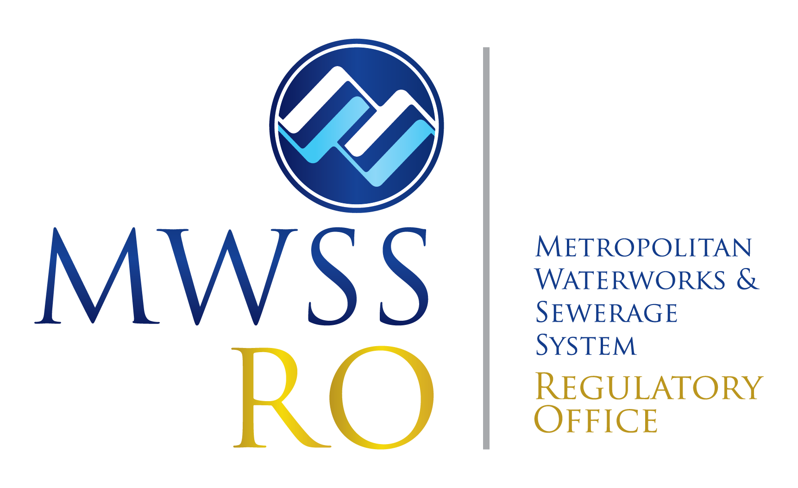

MWSS
RO
MWSS Regulatory Office
Citizen's Charter 2026 · 1st Edition
🌐 External Services
Receiving of Incoming Documents
Simple
Filing of Rate Adjustment Application
Simple
Filing of Request for Approval of ALAP
Simple
Filing of Request for Approval of Concessionaire Loan
Simple
Hiring of Plantilla Personnel
Highly Technical
Hiring of Contract of Service Provider
Highly Technical
Customer Complaints - Walk In
Simple
Customer Complaints - Email/Mail
Simple
Request for Water Sampling
Highly Technical
🏛️ Internal / Mixed Services
Retrieval of Official Documents
Simple
ICT Infrastructure Corrective Maintenance
Simple
Website Development and Maintenance
Simple
GovMail - New Email Account
Complex
GovMail - Password Reset
Simple
GovMail - Storage Increase
Simple
Reimbursement from Petty Cash
Simple
Request & Liquidation of Cash Advance
Complex
Liquidation of Cash Advance
Highly Technical
Processing of Employment Records
Simple
Local Training Procedure
Simple
Procurement - Competitive Bidding
Highly Technical
Procurement - Alternative Methods
Highly Technical
Provision of Transport Services
Simple
Issuance of PAR / ICS
Simple
Legal Documents / Opinions (Complex)
Complex
Legal Documents / Opinions (Highly Technical)
Highly Technical
Processing of Payment of Claims
Highly Technical
← Back to all services